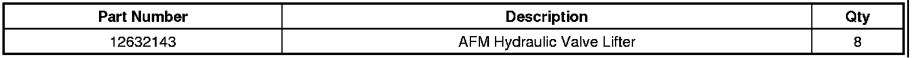
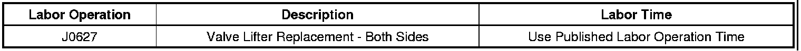
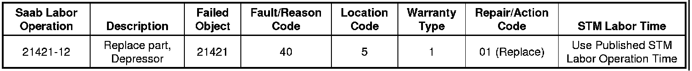

Engine - Valve Lifter Tick Noise At Start Up
TECHNICALBulletin No.: 10-06-01-007D
Date: April 10, 2012
Subject: Active Fuel Management (AFM) Engine, Valve Lifter Tick Noise at Start Up When Engine Has Been Off for 2 Hours or More (Evaluate Noise and/or Replace AFM Valve Lifters)
Models:
2007 Buick Rainier
2009 Buick LaCrosse Super, Allure Super (Canada Only)
2007 Cadillac Escalade
Built Prior to April 1, 2006 with 6.2L Engine RPO L92 (These engines were built with AFM Hardware but the AFM system was disabled)
2010-2011 Cadillac Escalade, Escalade ESV, Escalade EXT
2007 Chevrolet Monte Carlo
2007-2009 Chevrolet Impala
2007-2011 Chevrolet Avalanche, Silverado, Suburban, Tahoe, TrailBlazer, TrailBlazer EXT
2010-2011 Chevrolet Camaro SS
2007-2011 GMC Envoy, Envoy XL, Sierra, Yukon, Yukon Denali, Yukon XL, Yukon XL Denali
2007-2008 Pontiac Grand Prix
2008-2009 Pontiac G8
2007-2009 Saab 9-7X
Equipped with AFM (Active Fuel Management) and V8 Engine RPO L76, L94, L99, LC9, LFA, LH6, LMG, LS4, LY5 or LZ1
Attention:
This bulletin only applies to the AFM V8 engines listed above. It DOES NOT apply to non-AFM Engines. If you are dealing with a non-AFM engine that is experiencing a similar noise, refer to Engine Mechanical > Diagnostic Information and Procedures > Symptoms in SI.
Supercede:
This bulletin is being revised to update the Correction information by removing the non-AFM valve lifter replacement and removing the non-AFM valve lifter Parts Information. Please discard Corporate Bulletin Number 10-06-01-007C (Section 06 - Engine/Propulsion System).
Condition
Some customers may comment on an engine valve lifter tick noise that occurs after the engine has been shut off for at least two hours. The tick noise may last from two seconds to ten minutes.
Cause
This condition may be caused by any of the following:
- Aerated oil in the valve lifter body, resulting in the valve lifter being unable to purge the air quickly.
- A low engine oil level or incorrect oil viscosity.
- Dirty or contaminated oil.
- A low internal valve lifter oil reservoir level.
- Debris in the valve lifter.
- A high valve lifter leak down rate.
Correction
If the SI diagnostics do not isolate the cause of this valve lifter tick noise and normal oil pressure is noted during the concern, perform the following steps:
1. Inspect the engine oil condition and level. Refer to Owner Manual > Service and Appearance Care > Checking Things Under the Hood > Description and Operation > Engine Oil in SI.
• If the engine oil is more than one quart low, an incorrect oil viscosity is being used or if poor quality/contamination is observed, change the oil and filter.
Notice
Allow at least a two hour soak time between engine OFF and start up when evaluating the valve lifter tick noise.
2. Start the engine and evaluate the valve lifter tick noise.
• If the valve lifter tick noise is still present, replace all 8 active fuel management (AFM) valve lifters ONLY.
Refer to Valve Lifter Replacement (With AFM) in SI.
Parts Information

Warranty Information (excluding Saab Models)
For vehicles repaired under warranty, use:

Warranty Information (Saab Models)

For vehicles repaired under warranty, use the table.

Disclaimer